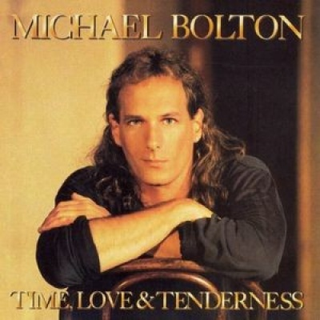

Michael Bolotin (26 de febrero de 1953, New Haven, Connecticut), conocido artísticamente como Michael Bolton, es un cantante y compositor estadounidense que logró gran éxito a mediados de los ochenta y a inicios de los noventa. Se destaca por ser uno de los exponentes más populares del soft-rock y la balada romántica estadounidense de esa época. Sus logros incluyen la venta de 53 millones de álbumes, ocho álbumes en Top Ten, dos sencillos en número uno de las listas de Billboard y premios como el Grammy.
